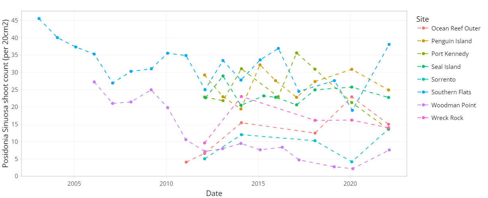
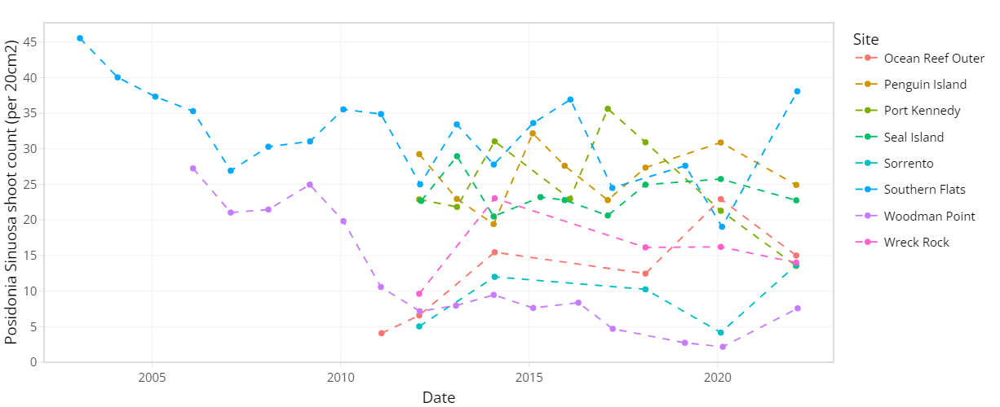
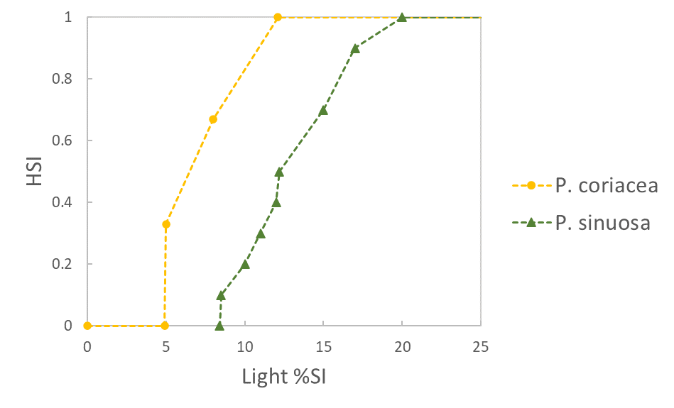
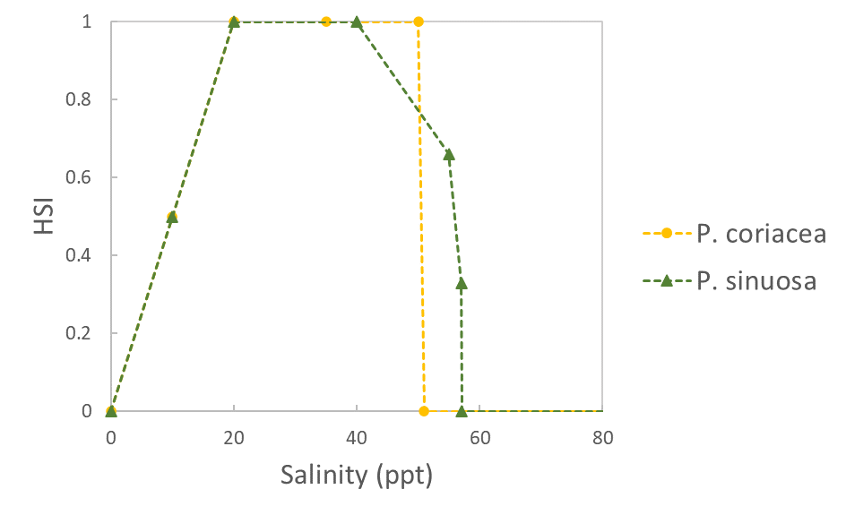
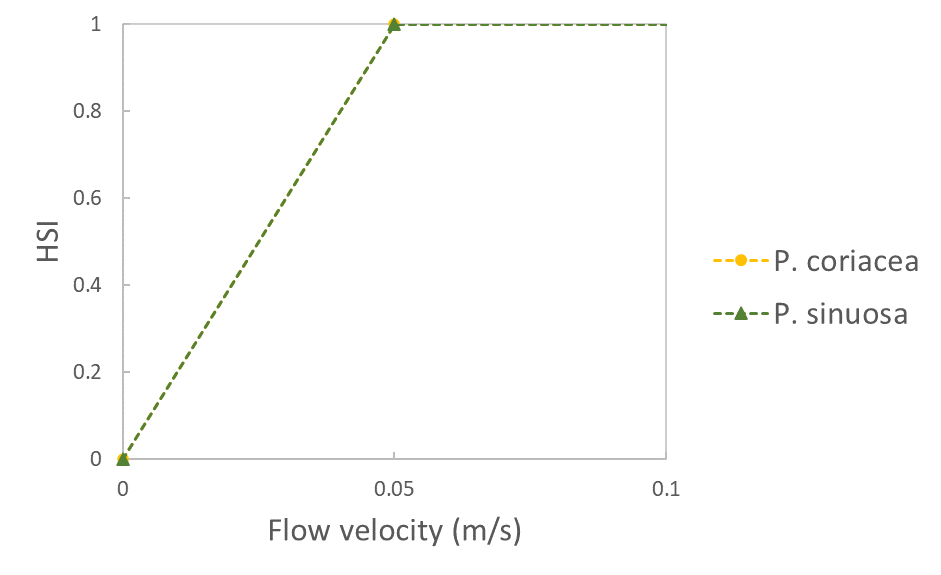

11 Seagrass Habitat and Biomass Dynamics
11.2 Overview
Seagrass is an important ecological component of Cockburn Sound, where seagrass meadows have historically flourished, covering most of the seabed at depth of 10 m or less within the Sound before industrial development (Cambridge & McComb, 1984). The seagrass coverage declined severely after industrial development and was estimated that only 22% seagrass remained in year 1978 (Cambridge & McComb, 1984; Kendrick et al., 2002). The extensive seagrass decline coincided with the discharge of effluents which were rich in nutrients (Cambridge et al., 1986; Cockburn Sound Management Council, 2009), indicating the water quality such as elevated nutrient levels, decreased water clarity and light availability are vital for seagrass survival.
Despite reductions in nutrient loads achieved through water quality improvement initiatives, including relocating wastewater to the Sepia Depression Ocean Outlet, seagrass coverage has not shown significant recovery in the Sound (Kirckman et al., 2000; Kendrick et al., 2002). This persistent loss underscores the urgent need to understand the ecological dynamics of seagrass in Cockburn Sound and apply this knowledge to restoration efforts.
Research into the drivers of seagrass decline has primarily focused on changes to physical conditions in the water column, with the high light requirements of seagrasses leading them to be vulnerable to stressors which reduce light availability such as eutrophication, macroalgal smothering, or increased turbidity.
Seagrass dynamics are highly sensitive to light availability, which are directly influenced by water quality parameters, including suspended particles, dissolved organic material, filamentous algae, and phytoplankton. These elements alter the inherent optical properties of the water, which in turn affects light penetration and seagrass photosynthesis (Baird et al., 2016).
In this chapter, we present both habitat index-based model (HSI), and a dynamic seagrass model that integrates water quality and spectral light conditions, aiming to assess the impacts of water quality changes on seagrass dynamics. Together these tools, providing insights that can support effective management and potential restoration of seagrass meadows in Cockburn Sound.
11.4 Long-term seagrass monitoring and trends
The condition of seagrass communities in Cockburn Sound, Warnbro Sound and Marmion at various sites were monitored annually between 2003 – 2022 by Cockburn Sound Management Council (Figure 7.1). Sampling has mostly conducted during summer months but has varied from year to year. Survey records generally include shoot count, lower depth limit, seagrass height, dominant epiphyte type and cover (Table 7.1), but also varied over time. Monitoring primarily focused on the historically dominant species Posidonia sinuosa, though in some years, presence/absence or shoot count data are also available for other species such as Posidonia australis, Posidonia coriacea, Amphibolis griffithii, and Amphibolis antarctica. Average shoot count of P. sinuosa between 2003 - 2022 at all monitoring sites within the model domain are summarized in Figure 7.2 and 7.3. Additionally, several case studies that recorded P. sinuosa biomass in CS are particularly relevant to the dynamic seagrass model and are listed in Table 7.1.
 Figure 7.1. Location of CSMC long-term seagrass monitoring sites within the model domain (left) and within Cockburn Sound (right).
Figure 7.1. Location of CSMC long-term seagrass monitoring sites within the model domain (left) and within Cockburn Sound (right).
Table 7.1. Summary of historical seagrass monitoring datasets in Cockburn Sound relevant to model development.
| Program/Author | Period | Variables | Number of sites | Note |
|---|---|---|---|---|
| Long-term monitoring | ||||
| CSMC* | 2003 - 2022 (majority sampled in Jan - Mar) | Seagrass shoot count (multiple species), epiphyte type/cover, seagrass height, lower depth limit, depth; dominant/non-dominant epiphyte type, cover (% or categorical), epiphyte biomass; Depth transect sites: Leading edge/depth, lower depth limit distance/depth | 58 (41 within model domain) | |
| WWMSP 2.2^ | 2003 - 2022 (no dates) | P. sinuosa count, depth, habitat type, year (no dates); dominant algae type, density (categorical) | 61 (34 within model domain) | This is a QAQC'd version of the CSMC dataset |
| Case studies | ||||
| Fraser & Kendrick 2017 | Mar - May 2015 | P. sinuosa shoot count, depth, biomass (above/below ground), productivity, epiphytes biomass, leaf/root sulfur %, rhizome heavy metals | 12 | |
| Collier et al. 2007 | Jun 2002; Jan-Feb 2003 | P. sinuosa shoot count, biomass (above/below), epiphyte biomass, depth, leaf morphology, leaf growth, light | 2 transects * 6 depths | |
| Keulen 1998 | Dec 1991 - Feb 1993 | P. sinuosa shoot count, biomass (above ground) | 2 |
*Cockburn Sound Management Council
^Westport Marine Science Program - Theme 2.2

 

Figure 7.2. Average Posidonia sinuosa shoot count per 20 cm2 between 2003 – 2022 at CSMC monitoring sites (showing sites within model domain only).
11.5 Benthic habitat mapping
Map of the dominant benthic habitat features on the seafloor, with seagrass distribution shown to a genus level for Amphibolis and Halophila and species level for Posidonia for the Cockburn Sound, Owen Anchorage and Gage Roads regions were supplied by WAMSI Westport Marine Science Program Theme 2 Project 2.1 (WWMSP2.1). Benthic features for areas within the model domain not covered by this recent mapping were based on West Coast Bioregion (WCB) mapping (Hovey 2023).
Due to the high resolution of the WWMSP2.1 map and technical constraints of TUFLOW-FV, polygon boundaries underwent a resolution reduction process prior to being used in model simulation (Figure 7.4). Additionally, the original 11 seagrass community groups provided by WWMSP2.1 were classified into four groups by their dominant species (Table 7.2) to assist with alignment of group parameterisation within CSIEM.

Figure 7.3. Average Posidonia sinuosa shoot count per 20 cm2 between 2003 – 2022 at CSMC monitoring sites Garden Island and Warnbro Sound at multiple depths.
Table 7.2. Seagrass groups in WWMSP2.1 benthic map and CSIEM set up.
| WWMSP2.1 seagrass group | CSIEM seagrass group |
|---|---|
| Amphibolis | Amphibolis |
| P. australis; P. australis & Amphibolis; P. australis & P. sinuosa; P. australis & P. sinuosa & Amphibolis | P. australis dominant |
| P. coriacea; P. coriacea & Amphibolis; P. coriacea & Amphibolis with Halophila | P. coriacea dominant |
| P. sinuosa; P. sinuosa & Amphibolis; P. sinuosa & P. coriacea & Amphibolis | P. sinuosa dominant |
 Figure 7.4. Substrate type and benthic habitat within the model domain, including distribution of seagrass communities within the Cockburn Sound and Owen Anchorage (CSOA).
Figure 7.4. Substrate type and benthic habitat within the model domain, including distribution of seagrass communities within the Cockburn Sound and Owen Anchorage (CSOA).
11.6 WAMSI Theme 2 seagrass experiments
Light threshold
There have been several studies on the environmental thresholds of seagrass species that occur in CS over the last few decades, including field observations, field experiments and laboratory experiments. Among known environmental controls, light requirements received the most attention, with a number of metrics commonly seen in the literature such as minimum light requirement in the unit of percentage of surface irradiance (%SI) and daily light integral (DLI, mol m-2 d-1) over a set duration (see Said et al. 2024a for a comprehensive review). However, direct comparison between these metrics may be challenging (Said et al. 2024a). Some species have also been studied in a different geographical context (e.g. South Australia, Erftemeijer et al. 2024), which suggest that thresholds may differ between locations and locally derived thresholds are preferred.
During WWMSP2, to simulate a dredging scenario during a marine heatwave event, a shading experiment was conducted in combination of a heatwave treatment in an outdoor mesocosm facility to investigate their interactive effect on P. sinuosa collected from CS (Webster et al. 2024). Based on the three-week experiment, the main conclusions relevant to threshold parameterisation in the model were 1) the light requirement derived from this experiment was consistent with existing literature: 2 mol photons m-2 d-1 (ambient light 8 mol m-2 d-1), although for longer durations (≥ 2 months), a more conservative threshold may be needed; 2) the effects of high temperature were positive (tested up to 28°C) and independent of light treatment; 3) the effect of light and temperature did not show significant interaction; 4) these results suggest P. sinuosa can tolerate light reduction during a short-term (≤ 21 days) heatwave.
Temperature threshold
In comparison, seagrass temperature thresholds in CS are less studied in the past (Said et al. 2024a). In addition to the findings stated above during the light reduction x heatwave experiment, WWMSP2 has conducted thermal tolerance lab experiments on several species from populations across multiple geographical locations in WA (Said et al. 2024b). Based on the photosynthesis-temperature (P-T) relationship derived from this short-term experiment, main findings were that thermal tolerance/optima varied between species (by almost 10°C across six species) and within species across locations. P. sinuosa in the Perth region had a thermal optimum of 26°C, lowest among all populations tested including the most southern population in Geographe bay. Thermal maximum for P. sinuosa in Perth was 38°C.
11.8 Approach
The first approach adopted in this study was to simulate “habitat suitability” based on an assessment of modelled environmental conditions relative to the known requirements of P. sinuosa, which include light, wave exposure, temperature, salinity, flow velocity and substrate type. This approach was then used to define a relative index for each computational cell by overlaying the various environmental controls/limitations that have been informed based on WWMSP Theme 2 experiments and available literature. The Habitat Suitability Index (HSI) approach empirically defines conditions that lead to successful growth, without the need for mechanistic simulation of processes such as photosynthesis and respiration.
The simulated conditions from CSIEM (mesh B - optimised) were used to calculate the HSI. In each model grid cell (c), the HSI for each environmental control (i) was computed based on suitability of average conditions between 1/7/2023 – 30/9/2023, by defining a fractional index, \({HSI}_{c}^{i}\). \({HSI}_{c}^{i}\) for each environmental control were then integrated into an overall HSI (\({HSI}_{c}^{overall}\)) which indicates the overall suitability for plant growth. Specifically, this was computed as follows:
11.9 \({HSI}_{c}^{overall}\ \ = \ {HSI}_{c}^{light}*{HSI}_{c}^{wave}*{HSI}_{c}^{temp}*{HSI}_{c}^{sal}*{HSI}_{c}^{vel}*{HSI}_{c}^{sub}\) (8.1)
Suitability ranged from 0 to 1, representing unsuitable to optimal conditions, respectively. The individual functions are summarised in Table 7.1. As a quick screening assessment, we adopted the function forms used in Erftemeijer et al. (2023) with updated thresholds based on WWMSP 2 findings, using data from Perth seagrass populations where available. After initial review and assessments, a three-month period in late winter-early spring was chosen for suitability analysis due to a) light availability was around its lowest due to both shorter day light hours and higher turbidity, and b) higher wave exposure, both of which are primary environmental controls on P. sinuosa distribution in CS.
Upon review of current extent of seagrass communities in the Cockburn Sound and Owen Anchorage (CSOA) region, an additional species P. coriacea was included in the HSI assessment as a reference considering its large extent in the CSOA and Gage Roads region. While environmental requirements for P. sinuosa were based on WWMSP 2 experiments and available literature, those for P. coriacea were based on literature only (Table 7.3).
Prior to the calculation of HSI, some output from the hydrodynamic-biogeochemical model were adjusted based on model performance assessments. Specifically, for assessing habitat suitability on wave exposure, a factor of 0.35 was applied to simulated wave bottom orbital velocity from the WWM due to over-prediction of significant wave height in the Owen Anchorage region (see Figure 8.8a and 8.9a). For light availability, a factor of 1.4 was applied to extinction coefficient across the model domain except in Cockburn Sound, as turbidity outside CS was likely underpredicted. However, field data were extremely limited outside CS to make comprehensive assessment of model performance on light predictions.
Table 7.3. Habitat suitability functions (HSI) for light availability, temperature, wave exposure, salinity, flow velocity and substrate type for Posidonia sinuosa and Posidonia coriacea. An HSI of 0 represents unsuitable conditions, while an HSI of 1 indicates optimal conditions.
| Environmental condition (i) | HSI function | Sources |
|---|---|---|
|
Light availability (% surface irradiance) |
 |
P. sinuosa: Erftemeijer et al. 2023, with minimum threshold adjusted based on data from Perth populations assuming light epiphyte cover (Collier et al. 2007) P. coriacea: Erftemeijer et al. 2023 |
| Temperature (°C) |  |
P. sinuosa: Said et al. 2024b (adapted) P. coriacea: Erftemeijer et al. 2023 |
|
Wave exposure (bottom orbital velocity, m/s) |
 |
Erftemeijer et al. 2023 (adjusted) |
| Salinity (ppt) |  | Erftemeijer et al. 2023 |
| Flow velocity (m/s) |  | Erftemeijer et al. 2023 |
| Substrate | \(HSI\) = \(\left\{ \begin{array}{r} 1,\ soft\ substrate\ (sand)\ \\ 0.5,\ mixed\ substrate \\ 0,\ \ all\ other\ substrate\ types \end{array} \right.\ \) | Erftemeijer et al. 2023 (adapted) |
Following the calculation of overall HSI, a Restoration Priority Index (RPI) was computed in each cell to indicate areas with high restoration potential, or priority, considering the overall HSI and current distribution of seagrasses. Specifically, this was calculated by subtracting the presence of any seagrass species (present – 1, absent – 0) from the \({HSI}_{}^{overall}\) in each cell. As a result, RPI ranges from 0 to 1, representing low to high restoration priority. Essentially, an area with RPI = 1 indicates high quality habitat where seagrasses have yet to establish and could be prioritised for restoration (e.g. transplanting).
To quantify total suitable habitat, the HSI was used as a multiplier with the cell area when HSI ≥ 0.5, \(A_{c}\), to calculate HSI-weighted habitat area, according to:
\(A_{}^{HSI} = \sum_{c}^{}{{HSI}_{c}^{overall}*A_{c}}\) (8.2)
Since previous studies have identified light availability as the primary environmental control of P. sinuosa distribution in CS (Collier et al. 2007), sensitivity analysis of suitable habitat area to light attenuation (Kd) through the water column was conducted. Additionally, to explore the possible light-attenuation effect of moderate to heavy epiphyte loading on seagrass leaves, habitat suitability index with epiphyte, \({HSI}_{c}^{overall\_ epi}\), and the corresponding habitat area at various Kd values were calculated by reducing modelled light availability by 45% (Masini et al. 1995) to illustrate an extreme case. Modelled habitat area was compared against historical record of seagrass area and light attenuation measurements in CS where available.
11.10 Habitat suitability results and discussion
Figure 7.6 and Figure 7.7 show the pattern of habitat suitability for P. sinuosa and P. coriacea, respectively, during July – September 2023 based on salinity, temperature, light availability, flow velocity, wave exposure, substrate, which were integrated into an overall suitability. The most significant environmental controls for P. sinuosa and P. coriacea habitat in the CSOA are light availability and wave exposure (Figure 7.6 and 7.7), however, for P. sinuosa habitat to be considered optimal, higher light and less wave exposure are required compared to P. coriacea. Inside CS, habitat quality for P. sinuosa is primarily influenced by light availability, and optimal habitats are located along the eastern shore of Garden Island and around Southern Flats, as well as small patches along the western edge of Kwinana Shelf (Figure 7.6). In contrast, extensive areas in the CSOA are potentially suitable for P. coriacea, except in the CS basin (Figure 7.7).
Comparisons between the modelled HSI and WWMSP Theme 2 seagrass distribution map suggest the current extent of P. sinuosa communities generally agreed with model predictions, in that the presence of P. sinuosa community aligned with areas with higher suitability (HSI > 0.5, Figure 7.8). Larger continuous meadows tended to occur in high quality habitat (HSI ≥ 0.7), whereas patchy population distribution was generally associated with habitat of lower or mixed quality. Within CS, P. sinuosa meadows appeared to only occur in high quality habitat (HSI ≥ 0.7). Slight misalignment was evident around the northern and southern tips of Garden Island where isolated patches of P. sinuosa exist, but modelled HSI indicated unsuitable habitat due to wave exposure (Figure 7.8 and 7.6). This suggests either a) overprediction of wave bottom velocity in these areas which could be relatively sheltered by the large extent of reef and macroalgae on the west (Figure 7.4); or b) uncertainty around wave tolerance threshold for this species, as very limited studies, if any, exist on their wave tolerance other than a general consensus that P. sinuosa prefers a relatively sheltered position (Erftemeijer 2013).
P. coriacea showed a similar trend, however, mismatch between HSI and P. coriacea presence occurred around Parmelia, Mewstone, and south of Garden Island where P. coriacea population exist but modelled HSI indicated unsuitable habitat due to wave exposure (Figure 7.9 and 7.7). This again suggests uncertainties on wave predictions and/or wave tolerances. It is important to note that habitat suitability functions for P. coriacea were based on literature focusing on populations in South Australia, which may differ slightly to Western Australian populations.
Current P. sinuosa extent was also compared against modelled HSI assuming heavy epiphyte loading (45% light reduction) as a reference (Figure 7.10). Within CS, the effects of epiphyte shading on habitat suitability appeared to be the greatest on Kwinana Shelf - only isolated patches of habitat remain on the western edge – which coincidently aligned with the current P. sinuosa extent. In comparison, areas near Garden Island and Southern Flats were much less affected by epiphytes with HSI generally still greater than 0.6.
Within CS, areas with high restoration priority are located on the western side of Kwinana Shelf due to higher light availabilities, as well as along the coast in the south-east region (Figure 7.11A Basecase).

Figure 7.6. Model output of Habitat Suitability Index (HSI) for Posidonia sinuosa in the Cockburn Sound, Owen Anchorage and Gage Roads region, as a function of salinity, temperature, light availability, flow velocity, wave exposure, substrate type, and an integrated overall suitability. An HSI of 0 represents unsuitable habitat conditions (dark blue), while an HSI of 1 represents optimal conditions (yellow).

Figure 7.7. Model output of Habitat Suitability Index (HSI) for Posidonia coriacea in the Cockburn Sound, Owen Anchorage and Gage Roads region, as a function of salinity, temperature, light availability, flow velocity, wave exposure, substrate type, and an integrated overall suitability. An HSI of 0 represents unsuitable habitat conditions (dark blue), while an HSI of 1 represents optimal conditions (yellow).
If water clarity improves, i.e. average Kd is reduced by 20% from 0.23 m-1 to 0.18 m-1, much of the Kwinana Shelf would become high quality habitat with high restoration potential (RPI ≥ 0.7, Figure 7.11A). If Kd is further reduced to 0.14 m-1, most of CS and OA that do not currently have seagrass establishment would become highly suitable except in the deep basin (Figure 7.11A). In contrast, if seagrass leaves are heavily epiphytised, water clarity will need to be much higher with Kd = 0.1 m-1 to provide similar restoration potential (Figure 7.11B).
Modelling suggests current total weighted suitable habitat area (HSI ≥ 0.5) for P. sinuosa within CS is approximately 21 km2, among which 14 km2 is predicted to have good restoration potential (RPI ≥ 0.5) after excluding areas already occupied by seagrasses (Figure 7.12). Based on the most recent WWMSP2.1 benthic mapping in 2022, the estimated total area for all seagrass species was 9 km2, however only 3 km2 was dominated by P. sinuosa, making up considerably smaller proportions of the total seagrass extent compared to 1999 mapping where seagrasses in CS were predominantly P. sinuosa (Kendrick et al. 2002). It was as expected that modelled habitat area was much higher than the actual P. sinuosa extent, since only a few major environmental factors were considered which indicate

Figure 7.8. Comparison between modelled Habitat Suitability Index (HSI) and Posidonia sinuosa presence in the Cockburn Sound and Owen Anchorage region. An HSI of 0 represents unsuitable habitat conditions (dark purple), while an HSI of 1 represents optimal conditions (yellow).
Figure 7.9. Comparison between modelled Habitat Suitability Index (HSI) and Posidonia coriacea presence in the Cockburn Sound and Owen Anchorage region. An HSI of 0 represents unsuitable habitat conditions (dark purple), while an HSI of 1 represents optimal conditions (yellow).
Figure 7.10. Comparison between modelled Habitat Suitability Index (HSI) if light availability was reduced by heavy epiphyte loading and Posidonia sinuosa presence in the Cockburn Sound and Owen Anchorage region. An HSI of 0 represents unsuitable habitat conditions (dark purple), while an HSI of 1 represents optimal conditions (yellow).
the fundamental niche, or an ‘environmental envelope’ that the species may exist in. Variables not included in the model, including biological factors such as resource competition and animal grazing will impact on actual seagrass occurrence. Assuming epiphyte loading was light, the predicted habitat area in response to changing water clarity, i.e. light attenuation coefficient (Kd), between 0.14 m-1 and 0.34 m-1 appears to be relatively linear (Figure 7.12). Comparing with estimated past seagrass extent in CS between 1978 and 2017 when water clarity gradually improved, total seagrass extent did not follow the same trajectory as modelled habitat and remained relatively unchanged. Although the habitat model is based on environmental requirements of P. sinuosa while all past seagrass mapping in CS did not distinguish species except in 1999, it is not unreasonable to expect the total seagrass extent in the last four decades would follow a similar trend along the light attenuation gradient given that a) both existing literature (e.g., Cambridge & McComb 1984) and 1999 mapping suggested historically almost all seagrass in CS were P. sinuosa (Figure 7.12, Kendrick et al. 2002); b) there is a great deal of overlap in light requirements among seagrass species in CS (see Eftermeijer et al. 2023 for a summary of light requirements for several seagrass species that are also present in CS); and c) light availability was identified as the primary limiting factor for seagrass in general in CS due to water quality issues since industrialisation (Masini et al. 1995).
Interestingly, under the modelled scenario where seagrasses are heavily epiphytised with 45% less light reaching leaves, the trajectory of habitat area response to changing water clarity coincidently agreed with mapped seagrass extent over the last four decades, in that the slope of change is predicted to be gentle, i.e., change in suitable area in response to per unit of change in Kd, is insignificant, between Kd of 0.34 m-1 and 0.23 m-1 (Figure 7.12). Under this trajectory, suitable habitat area will only increase considerably when Kd is reduced to less than 0.18 m-1.
It's important to note that in the heavy epiphyte loading scenario, light reduction was applied universally across the domain to illustrate an extreme case. It is likely that epiphyte loading in the past varied both spatially and temporally resulting in an overall lighter epiphyte cover, so that the modelled total HSI-weighted habitat area (“epiphytised”) would be greater than the actual seagrass extent since the fundamental niche of a species should always be greater than the realised niche (Figure 7.12). Following the trajectory of this scenario, the original seagrass extent of 42 km2 in 1954 would not be reached even when Kd approaches 0.1 m-1, suggesting a lighter epiphyte cover back then which is highly probable given fewer eutrophication issues. However, this certainly does not exclude the possibility that the seagrass was in better health due to factors not modelled. It is also possible that Kd and epiphyte loading were correlated to some extent, since both can be positively associated with eutrophication. This may mean that in periods shortly after commencement of industrialisation and water quality degradation, the total habitat area versus Kd relationship followed the heavily epiphytised scenario.
Given the significant influence of light availability on seagrass health in CS as demonstrated both by field studies and our modelling, it is worth considering further refinements on habitat model algorithms on light requirements for seagrasses. Water clarity varies considerably in CSOA throughout the year. Based on light attenuation measurements in 2023 alone (data provided by Cockburn Sound Management Council), the highest monthly mean Kd (0.28 m-1) which occurred in July, was 47% higher than that in March (0.19 m-1). The selection of time window for suitability assessment could therefore change predictions significantly. If this seasonality of Kd also varies from year to year, a more refined approach may be using a rolling average of the most challenging months in any given year, for example. This approach could also be applied to the wave exposure and temperature suitability algorithm. Under current conditions, temperature is not a limiting factor in any season, however if the effects of climate change are to be explored in future studies, time window selection will need refinement. Further, studies have suggested as healthy Posidonia has energy reserves that allow them to withstand acute shading and recover when the shading is removed, but are particularly susceptible to chronic light reduction as long-term persistence is dependent on maintaining a positive energy balance (Masini et al. 1995), it may be an option to trial a longer period or year-round integrated light requirement/threshold such as photoperiod, or consider using daily light integral (instead of % surface irradiance) which accounts for daylight hours and cloud cover in additional to turbidity. There may also be a need for seasonally varying light thresholds (Said et al. 2024a). This means it is crucial to have light climate resolved throughout the year. While wave exposure isn’t a limiting factor inside CS, further improvement on wave prediction, in addition to validation of light climate will offer higher confidence in habitat suitability predictions in the OA and GR region. It is also reasonable to assume that the environmental requirement in different life stages may differ, for example, seedlings may be more susceptible to wave exposure or low light event due to their less established root system and smaller energy reserve, respectively, and thus additional empirical data will assist further parameterise the suitability model with a focus on restoration site selection.

Figure 7.11. Restoration Priority Index (RPI) maps showing areas with high (yellow) to low (dark blue) restoration potential for Posidonia sinuosa under current conditions (Base case, average light attenuation coefficient Kd = 0.23 m-1 in spring - summer) and scenarios with higher water clarity (lower Kd (m-1) values, panel A). Also shown are RPI under the same conditions if epiphyte load is high reducing light availability (panel B). Grey areas are unsuitable habitat (HSI ≤ 0.1) or occupied by existing seagrass community.

Current condition
Figure 7.12. Modelled Posidonia sinuosa habitat area (HSI-weighted) in Cockburn Sound along the light attenuation coefficient (Kd) gradient, as well as modelled habitat area if epiphyte load is heavy (lines). Shaded area indicates potential restorable area. Also plotted are past and present estimated seagrass extent (points), including for P. sinuosa only (circles) and/or all seagrass species (triangles), with field Kd measurements in corresponding years during spring – summer. The estimated original seagrass extent in 1954 (before industrialisation) and 1967 are shown with unknown Kd (dashed grey lines). Data source for seagrass extent: 2022 - WWMSP2.1; 2017 and 2012 – Hovey & Fraser 2018; 1999, 1994, 1981 and 1967 – Kendrick et al. 2002; 1978 and 1954 – Cambridge & McComb 1984. Data source for Kd: Cockburn Sound Management Council (converted from log10 m-1).
11.12 Approach
The above seagrass HSI screening model (Section 8.3) uses environmental conditions to predict the theoretical habitat niche and is an empirical approach to mapping habitat suitability. However, for more detailed assessments of seagrass dynamics and their response to various impact scenarios it is also necessary to consider the variability in seagrass biomass dynamics and the ecophysiological controls on seagrass productivity. Further, seagrass presence can also generate physical and biogeochemical feedbacks on the broader system, that can be taken into account.
The AED seagrass model simulates the seagrass biomass through growth, respiration, mortality, and above-below ground translocation processes. The model has been constructed based on an integration of prior research work in Australian systems (Hipsey et al., 2016; Baird et al., 2016), and tailored to fit the Cockburn Sound environment by utilising the latest data from field survey and laboratory work on seagrass biophysical and ecophysiological properties.
In the model, the total seagrass biomass is composed by three components, the above-ground leave biomass \({MAC}_{A}\), below-ground biomass \({MAC}_{B}\), and fruits (or seeds) \({MAC}_{F}\). Their dynamics are generally described as:
\(\frac{d}{dt}{MAC}_{A} = f_{npp}^{{MAC}_{A}}\text{ } - f_{mor}^{{MAC}_{A}}\text{ } \pm \text{ }f_{tran}^{MAC} - f_{growth}^{{MAC}_{F}}\)
\(\frac{d}{dt}{MAC}_{B} = - f_{mor}^{{MAC}_{B}}\text{ } \mp \text{ }f_{tran}^{MAC}\)
\(\frac{d}{dt}{MAC}_{F} = f_{growth}^{{MAC}_{F}}\text{ } - \text{ }f_{release}^{{MAC}_{F}}\)
The above equations are described in detail in Appendix C.

Figure 7.13. Overview of the aed_macrophyte model applied for Cockburn Sound seagrass biomass predictions.
11.12.1 7.2.5 Seagrass canopy parameterisation and biomass initialisation
In order to appropriately parameterise the model and also align the model to observed seagrass survey and experimental data, the relationship between biomass and canopy properties is necessary. For example, canopy characteristics such as shoot density, stem diameter, and leaf height are important factors affecting the physical environment within and around a meadow, and the nature of light capture. Therefore, resolving the relations between the seagrass biomass and its canopy characteristics is required and this is described in this section specific to our application in Cockburn Sound and nearby waters.
In general terms, we know that biomass and shoot (or leaf) density are related, though this is complicated when comparing between species, and also dependent on the specific “health” of any given meadow. For example, the same shoot density could be associated with a high or low biomass. Within this in mind we leverage the concept of the Interspecific Boundary Line (IBL) which sets a maximum efficiency of space occupation (Figure 10), and with the perpendicular distance to the IBL indicating the overall efficiency of space occupation of any particular data point (Vieira et al., 2018).
Figure 7.14. Seagrass aboveground biomass-shoot density relations worldwide. Biomass (B) and shoot density (D) of seagrasses, their interspecific boundary line (IBL) given by log10B = 4.569 − 0.438∙log10D, and stands’ distances to the IBL (dgrass). Figure reprinted from Vieira et al. (2018).
As observed in Figure 10, data from a broad range of species and across many locations show the trend following the perpendicular line, and the relative distance (\(d_{grass}\)) from the seagrass IBL. The perpendicular line represents the species specific biomass-shoot density relationship, and can be presented mathematically using a log function such as:
\(\log 10(DW) = a \times \log 10\left( n_{v} \right) + b\)
where \(DW\) is the aboveground biomass in dry weight (g/m2), \(n_{v}\) is the shoot density (count/m2), and \(a\) and \(b\) are best-fit coefficients for any given species or meadow community.
In Cockburn Sound, biomass-shoot density relation for the dominant species P. sinuosa has been approximated using survey data from 1993, 2003 and 2015 where both shoot density and biomass records were available (Figure 7.15).
Figure 7.15. Log10 seagrass aboveground biomass-shoot density relation in Cockburn Sound. The arrow indicates the interspecific boundary value for data in Cockburn Sound. Series legend shows the year data were collected from the field. Data is sourced from: 2015 – Fraser and Kendrick 2017; 2003 – Collier et al. 2007; 1993 – Keulen 1998.
Summarising the above information leads to a relationship of biomass and shoot density specified for Posidonia sinuosa In Cockburn Sound as:
\(\log 10(DW) = 0.885 \times \log 10(n_{v})\)
By converting the Eq. (29), the shoot density of the seagrass \(n_{v}\) (in shoots/m2) can be calculated as \(n_{v} = 3.39DW\). This is similar to the empirical formulation based on relationships in Krause-Jensen et al. (2000) as \(n_{v} = 4.45DW\). A conversion factor \(\chi_{v}\) (=0.5/12×1000, mmol C/g DW) can also be used to link the shoot density to the above ground biomass (\({MAC}_{A}\)) in carbon units of mmol C/m2, such that:
\(DW = {MAC}_{A}/\chi_{v}\)
Therefore, for the CS application we can summarise the relationship between biomass and shoot density as: \(n_{v} = 3.39DW = 3.39{MAC}_{A}/\chi_{v}\)
Though Collier et al. (2007) showed there is no clear relationship between the seagrass biomass and leaf length, the shoot height (lv, m) is generally considered to be related to seagrass biomass as (Moore, 2004; Ganju et al., 2018):
\(l_{v} = 0.45 \times (\frac{DW}{DW + 120})\)
The relationship between canopy density and height, and above ground-biomass is able to be utilised for computing the light capture and flow resistance (drag) amounts, as outlined in Appendix C.
When configuring the seagrass biomass model, we must spatially initialise the simulated seagrass group(s) not only based on seagrass presence/absence, but also based on depth, due to the tendency for lower equilibrium biomass levels at lower light intensities. For this application, we first assign cells into “active zones” for seagrass biomass, based on the latest benthic mapping shape files (see Section 2.4), and then to initialise biomass in any cell we apply a biomass-depth relationship. For this we refer to data from Fraser and Kendrick (2017), whereby depth transects of shoot density have been provided.
\[{MAC}_{A}\lbrack z\rbrack = {MAC}_{\min} + \frac{\exp(a\lbrack z\rbrack)}{1 + \exp(a\lbrack z\rbrack)} \times ({MAC}_{\max} - {MAC}_{\min})\]
where \({MAC}_{\max}\) is the above-ground biomass under non-light limiting conditions and may be approximated from the IBL relationship outlined above, \({MAC}_{\min}\)is the minimum biomass at a defined minimum depth, and \(a\lbrack z\rbrack\) is a function based on the mean depth (\(z\)) at the location of interest. This function is optimised by fitting to data for P. sinuosa from Fraser and Kendrick … (200X) as shown in Figure 10, giving, \({MAC}_{\min} =\) 10, \({MAC}_{\max} = 650\), and:
\[a\lbrack z\rbrack = 0.95 \times (z - 7.5)\]
Figure 7.16: Biomass depth relationship based on two-years of data digitised from Collier et al. (2007) and Fraser and Kendrick (2017). The model is based on optimal fit to Eq XX.
The above:below ground biomass ratio is also able to be computed by assuming:
\({MAC}_{b} = f_{below} \times ({MAC}_{A} + {MAC}_{B}\))
where \(f_{below}\) was computed from available data for P. sinuosa (Figure 7.17). Note that, whilst Eq above will set a fixed fraction of total biomass to be below-ground, this fraction will vary over time based on the dynamic rate of translocation used in the model.
Figure 7.17. Above:below ground biomass relationship based on two-years of data digitised from Collier et al. (2007) and Fraser and Kendrick (2017).
11.13 Seagrass ecophysiological parameterisation
Seagrass productivity is modelled either using a bulk-light model or a spectrally-resolved model. In both models net productivity is computed as the balance of photosynthesis, mortality and respiration. In addition, optional functions were included in the model to account for above:below ground translocation and seasonal fruiting and seed release. Refer to Appendix C for details of the parametrisations used in the model. Initial parameter selection for the model is outlined in Table 7.4.
Table 7.4. Parameters used in the seagrass model …
| Variable | Symbol | Long name | Units | Comments |
|---|---|---|---|---|
| R_growth | \[R_{growth}^{{MAC}_{A}}\] | Maximum growth rate | /day |
Over annual cycle: 1-1.5% for P. sinuosa; 1.5 – 1.9% for P. australis (Cambridge and Hocking, 1997) 0.3 – 0.5 (photosynthetic efficiency, Collier et al., 2009) 0.4 (Baird et al., 2016) |
| Omega_mac | \[\Omega_{MAC}\] | Carbon-specific area of macrophyte | (mmol C m-2)-1 |
0.0099 (converted assuming highest biomass of 650 DW/m2) 0.0011-0.0019 (Converted from Baird et al., 2016) |
| AL | \[A_{L,\lambda}\] | Leaf absorbance | - |
0.28 – 0.83 (estimated from Collier et al., 2009) 0.7 (Baird et al., 2016) 0.57-0.59 (Ralph et al., 2007) |
| f_below | \[f_{below}\] | Fraction biomass below ground | - |
0.55-0.83 (Collier et al., 2009, shallow sites) 0.07-0.69 (Collier et al., 2009, deep sites) 0.5-0.75 (Baird et al., 2016) |
| tau_tran | \[\tau_{tran}\] | Translocation rate | /day | 0.033 (Baird et al., 2016) |
| sin_blade | \[sin\beta_{\text{blade~}}\] | Sine of nadir blade angle | - | 0.5 – 1.0 (Baird et al., 2016) |
| E_comp | \[E_{comp}\] | Compensation scalar PAR irradiance (minimum light requirement) | mol photon m-2 d-1 |
8-12% of surface PAR (Collier et al., 2007) 4-36% (global, Ralph et al., 2007) 2.8 – 4.5 (Baird et al., 2016) 2 (theme 2.2 experiments result) |
| k_mort_A | \[\varsigma_{{MAC}_{A}}\] | Leaf loss rate | /day | 0.06 (Baird et al., 2016) |
| k_mort_B | \[\varsigma_{{MAC}_{B}}\] | Root loss rate | /day | 0.004 (Baird et al., 2016) |
| f_seed | \[f_{seed}\] | Seed biomass as a fraction of 63% cover | - | 0.01 (Baird et al., 2016) |
| Variable | Symbol | Long name | Units | Comments |
|---|---|---|---|---|
| R_growth | \[R_{growth}^{{MAC}_{A}}\] | Maximum growth rate | /day |
Over annual cycle: 1-1.5% for P. sinuosa; 1.5 – 1.9% for P. australis (Cambridge and Hocking, 1997) 0.3 – 0.5 (photosynthetic efficiency, Collier et al., 2009) 0.4 (Baird et al., 2016) |
| Omega_mac | \[\Omega_{MAC}\] | Carbon-specific area of macrophyte | (mmol C m-2)-1 |
0.0099 (converted assuming highest biomass of 650 DW/m2) 0.0011-0.0019 (Converted from Baird et al., 2016) |
| AL | \[A_{L,\lambda}\] | Leaf absorbance | - |
0.28 – 0.83 (estimated from Collier et al., 2009) 0.7 (Baird et al., 2016) 0.57-0.59 (Ralph et al., 2007) |
| f_below | \[f_{below}\] | Fraction biomass below ground | - |
0.55-0.83 (Collier et al., 2009, shallow sites) 0.07-0.69 (Collier et al., 2009, deep sites) 0.5-0.75 (Baird et al., 2016) |
| tau_tran | \[\tau_{tran}\] | Translocation rate | /day | 0.033 (Baird et al., 2016) |
| sin_blade | \[sin\beta_{\text{blade~}}\] | Sine of nadir blade angle | - | 0.5 – 1.0 (Baird et al., 2016) |
| E_comp | \[E_{comp}\] | Compensation scalar PAR irradiance (minimum light requirement) | mol photon m-2 d-1 |
8-12% of surface PAR (Collier et al., 2007) 4-36% (global, Ralph et al., 2007) 2.8 – 4.5 (Baird et al., 2016) 2 (theme 2.2 experiments result) |
| k_mort_A | \[\varsigma_{{MAC}_{A}}\] | Leaf loss rate | /day | 0.06 (Baird et al., 2016) |
| k_mort_B | \[\varsigma_{{MAC}_{B}}\] | Root loss rate | /day | 0.004 (Baird et al., 2016) |
| f_seed | \[f_{seed}\] | Seed biomass as a fraction of 63% cover | - | 0.01 |
11.14 Seagrass biomass results and discussion
A simulation using CSIEM with the initial parameterisation of the model as described above has yielded relatively accurate patterns in seagrass biomass seasonality and biomass distribution over depth. Figure 7.18 shows the biomass pattern in the model once initialised with the benthic map and the above biomass-depth relationship. Figure 7.19 compares the seasonal changes across multiple depths and the nature of the above-below ground partitioning and the timing of fruit development and release.
Figure 7.18. Modelled Posidonia group biomass.

Figure 7.19. Modelled Posidonia group biomass seasonally varying, at multiple depths.
Overall, when compare the base model simulation with observed data aggregated over depth intervals, then the model reasonably captures the gradient. There is an underprediction in the depth range from 2-6m, and slight overprediction at 8-10m.
Figure 7.20. Modelled Posidonia group biomass compared with the average observed biomass from sampling for the year 2022.
11.15 Limitations and further work
This assessment focused on the potential impacts of water quality changes to the seagrass, which have ignored the other impacts from:
Climate change such as heatwave events can cause the seagrass decline (Strydom et al., 2020);
Other factors such as epiphyte (Cambridge et al., 1986) and sulfide intrusion from sediment (Fraser and Kendrick, 2017; Fraser et al., 2023) may also cause decline
Nonetheless, the model is suitable to predict the impacts of changes in water quality and to estimate seagrass productivity response to factors such as dredging and nutrient enrichment on the overall seagrass dynamics.